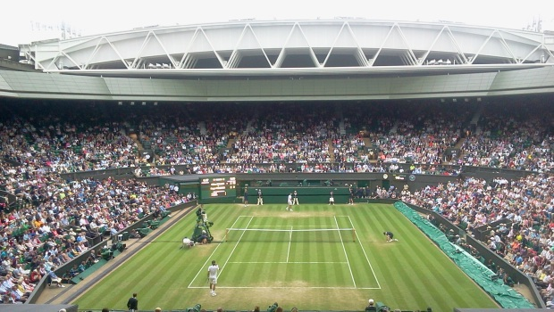

Tournaments
Grand Slams
In tennis, the biggest tournaments are called grand slams. There are four of them that take place each year: the Australian Open, the French Open, Wimbledon, and the US Open. These tournaments contain the largest draw of any other tournament on the ATP tour with 128 players composing the bracket of each grand slam. Unlike other tournaments, Grand Slam matches are best-of-five as opposed to best-of-three. They also award the most ranking points to players who win one of these tournaments. The winnner of a grand slam gets 2000 ranking points.
Australian Open
The Austrlian Open, which is played on hard court, is the first tournament of the calender year, occurring at the end of January in Melbourne, Australia. This tournament has grown to become the largest annual sporting event in the Southern Hemisphere. It is the highest attended Grand Slam event, with more than 780,000 people attending the 2019 Australian Open. It was also the first Grand Slam tournament to include indoor play during bad weather or extreme heat. It's three primary courts, the Rod Laver Arena, Melbourne Arena, and Margaret Court Arena, have retractable roofs.

French Open
The French Open, which is often called Roland-Garros, takes place between late May and early June in Paris, France. Unlike the Austrlian Open, this Grand Slam occurs on clay court. Due to the fact that clay courts tend to act as a slow-playing surface and that these matches are best-of-five, the French Open is often considered the most physically demanding tennis tournament in the world.

Wimbledon
Wimbledon, which takes place in London, is the oldest tennis tournament in the world. This tournament occurs in early July and is the only major played on grass court. Wimbledon is also the only grand slam to have a dress code. All of its competitors must wear all-white clothing. In 2009, a retractable roof was installed on Wimbledon's Center Court so that less playing time was lost due to rain.
US Open
Like the Australian, the US Open is played on hard court. It is the final Grand Slam tournament of the year, played in New York and starting on the last Monday of August and going for two weeks. The US Open is the only Grand Slam tournament that employs regular tiebreakers in every set of a singles match. Other Grand Slams either don't play fifth set tiebreakers are have weird rules for how or when tiebreakers are played in the fifth set.

Lower Level ATP Tournaments
- The Masters: The nine non grand-slam major tournaments that take place each year. The winner of one of these tournaments gets 1000 ranking points. The draws are composed of almost all top players. Three are played on clay while the rest are played on grass.
- ATP World Tour Finals: One tournament played at the end of every calendar year in London. Played by the top eight players in that year. It's played in a round robin format before the semi-finals and finals are played. The winner gets 1500 ranking points.
- ATP 500/250 Tournaments: Lower-tier tournaments that award 500/250 ranking points to the winner.